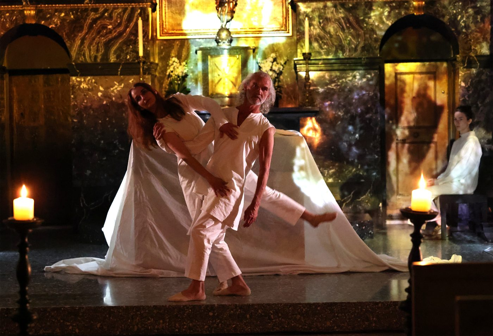
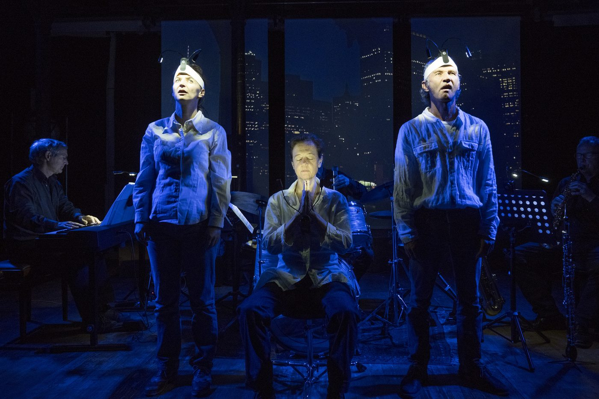
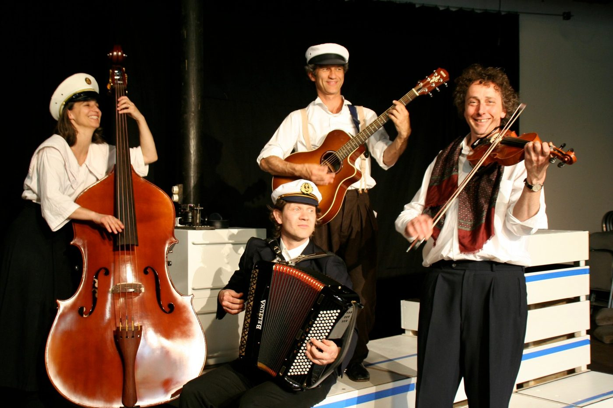
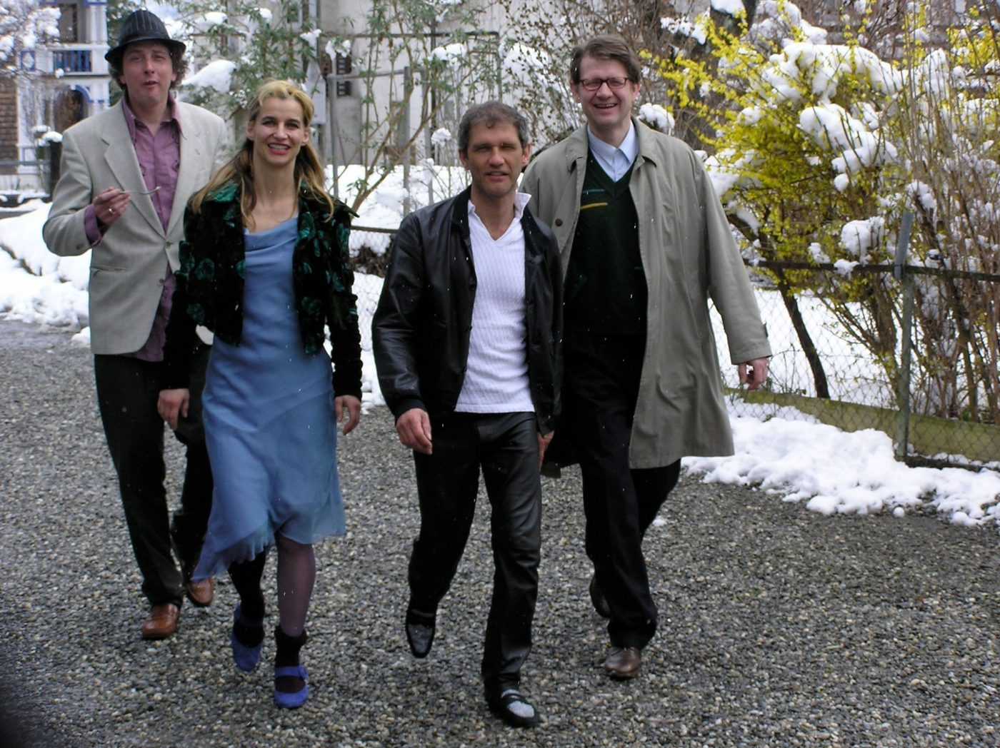

Im Projekt N!NA Theater hat sich eine Gruppe Kunstschaffender
zusammengefunden, die die gleiche Vision von Theater verfolgen. Das Theater
von N!NA besteht aus einer Kombination verschiedener Kunstsparten, dem
Schauspiel, der Literatur, der Musik und der bildenden Kunst. Bei jeder
Produktion wird das Verhältnis der Sparten neu ausbalanciert. N!NA ist
professionelles Theater, das sich mit aktuellen Themen auseinandersetzt und
doch publikumsnah bleibt.
Mehr über N!NA →
Stücke
Vierzehn Produktionen seit 2000 – die künstlerische Biografie von N!NA
Theater, von «Lillys Reise ans Ende der Welt» bis «Baltz Mengis».
Zu den Stücken →
N!NA Konzept
Neben dem Theater entwickelt und realisiert N!NA Konzept Museumsprojekte –
von Theatertouren im Historischen Museum Luzern über Hörstationen auf Schloss
Hallwyl bis zur Rauminszenierung im Maison Cailler.
Zu den Museumsprojekten →
Kulturwerkstatt Hagerhus

Die Kulturwerkstatt Hagerhus in Bätterkinden – eine ehemalige Papierfabrik
am Wasser – ist Produktionsstätte von N!NA Theater und Bühne für Gastspiele.
Programm und Reservation →